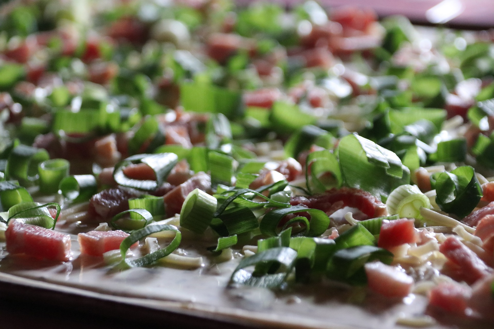
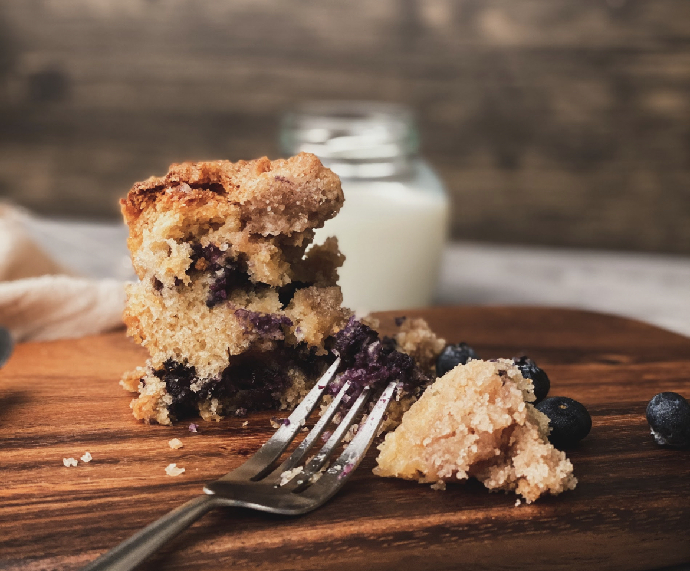

Home
Noord-Amerika
Amerikaans
Mexicaans
Europa
Duits
Frans
Italiaans
Nederlands
Azië
Indonesisch
Japans
Vegan
Over ons
Duits
Voorgerecht
Hoofdgerecht
Nagerecht
Voorgerecht
Pompoensoep (2 personen)
Ingrediënten
Halve flespompoen
(ongeveer 750 gram)
Halve aardappel
(flinke, ongeveer 100 gram)
1 ui
1 teen knoflook
Halve theelepel komijn
Halve theelepel kurkuma
Halve liter bouillon (kip of groenten)
Olijfolie
Peper en zout
Benodigdheden
Staafmixer
Bereidingswijze
Schil de pompoen, verwijder de zaadjes en snij in de grove stukken.
Schil de aardappel en snij in grove stukken. Snipper de uien en knoflook.
Verhit een beetje olijfolie in de pan, fruit de ui en knoflook even aan en voeg de komijnpoeder en kurkuma toe.
Voeg dan de aardappel en de pompoen toe.
Giet de bouillon erbij en breng het aan de kook.
Laat nu 15-20 minuten even zachtjes koken tot alle groenten zacht zijn.
Zet de staafmixer erin en pureer glad. Breng op smaak met peper en zout en een scheut kookroom naar smaak.
Voorgerecht
Nagerecht
Hoofdgerecht
Flammkuchen met ui en spekjes (4 stuks)

Ingrediënten
1 portie flammkuchen deeg
(of kant en klaar)
400 ml crème fraîche
2 grote rode uien
300 gr gerookte spekreepjes
Snuf zwarte peper
Benodigdheden
Bakpapier
Bakplaat
Deegroller
Bereidingswijze
Zorg dat het deeg in vier stukken is verdeeld.
Rol een stuk van het deeg uit en leg het op een bakplaat.
Verwarm de oven op 230 graden.
Besmeer het deeg ongeveer met een half bekertje crème fraîche.
Snijd de rode uien in ringetjes en verdeel dit over het deeg.
Vervolgens doe je de spekjes er nog over (deze hoef je niet voor te bakken).
Bestrooi de flammkuchen aan het einde nog met een snuf zwarte peper.
Bak dan de flammkuchen af in de oven voor 12 minuten.
Voorgerecht
Hoofdgerecht
Nagerecht
Kersen kruimeltaart (8 personen)

Ingrediënten
400 gram bloem
1 zakje bakpoeder
200 gram suiker
1 theelepel kaneel
Snufje zout
200 gram koude boter (in blokjes)
2 eieren
500 gram kersen
(Optioneel) 2 eetlepels kirsch
Benodigdheden
Vlaai bakvorm
Aluminiumfolie
Bereidingswijze
Breng kersen in een pannetje (met eventueel wat suiker aan de kook).
Maak een papje van maizena en doe dit samen met een eetlepel water bij de kersen.
Blijf nu roeren totdat het bindt.
Roer de 2 eetlepels kirsch er doorheen en zet het even opzij tot gebruik.
Doe de bloem, bakpoeder, suiker, zout, eieren en het boter samen in een bak en mix het door tot je een grof zand structuur krijgt.
Neem 1/3 deel van het deeg en meng daar de kaneel doorheen en zet dit apart tot gebruik (dit is voor de kruimellaag).
Kneed de rest van het deeg kort door met de handen.
Vet de vlaaibakvorm in met boter en bestrooi het dun met paneermeel.
Verdeel het deeg gelijkmatig over de bodem en druk het deeg aan de rand omhoog (ongeveer 3 cm).
Verdeel de gebonden kersen over de taartbodem.
Verdeel het kruimeldeeg over de kersen.
Bak de kruimeltaart in ongeveer 45 minuten goudbruin 175 graden/160 hetelucht.
Dek de taart af met aluminiumfolie als de bovenkant te donker wordt.
Laten de taart afkoelen op een roosters.